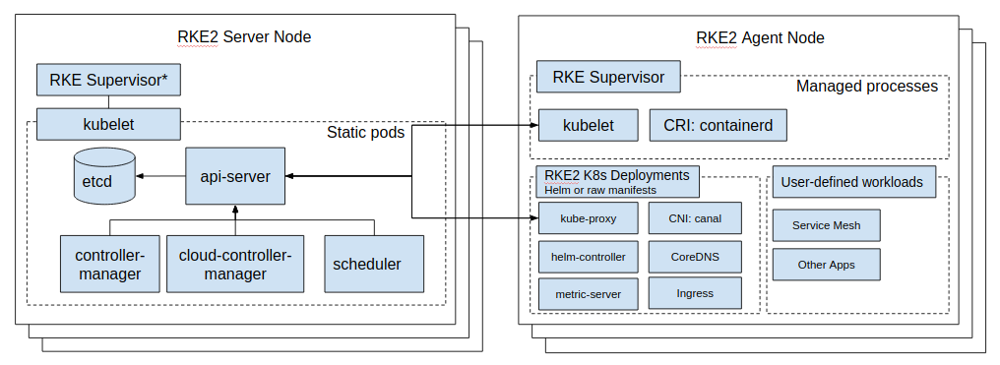

Anatomy of a Next Generation Kubernetes Distribution
Architecture Overview¶
With RKE2 we take lessons learned from developing and maintaining our lightweight Kubernetes distribution, K3s, and apply them to build an enterprise-ready distribution with K3s ease-of-use. What this means is that RKE2 is, at its simplest, a single binary to be installed and configured on all nodes expected to participate in the Kubernetes cluster. Once started, RKE2 is then able to bootstrap and supervise role-appropriate agents per node while sourcing needed content from the network.

RKE2 brings together a number of Open Source technologies to make this all work:
- K3s
- K8s
- etcd
- runc
- containerd/cri
- CNI: Canal a.k.a. Calico & Flannel
- CoreDNS
- NGINX Ingress Controller
- Metrics Server
- Helm
All of these, except the NGINX Ingress Controller, are compiled and statically linked with Go+BoringCrypto.
Process Lifecycle¶
Content Bootstrap¶
RKE2 sources binaries and manifests to run both server and agent nodes from the RKE2 Runtime image.
This means RKE2 scans /var/lib/rancher/rke2/agent/images/*.tar for the rancher/rke2-runtime
image (with a tag correlating to the output of rke2 --version) by default and if it cannot be found, attempts to pull
it from the network (a.k.a. Docker Hub). RKE2 then extracts /bin/ from the image, flattening it into
/var/lib/rancher/rke2/data/${RKE2_DATA_KEY}/bin where ${RKE2_DATA_KEY} represents a unique string identifying the
image.
For RKE2 to work as expected the runtime image must minimally provide:
containerd(the CRI)containerd-shim(shims wraprunctasks and do not stop whencontainerddoes)containerd-shim-runc-v1containerd-shim-runc-v2kubelet(the Kubernetes node agent)runc(the OCI runtime)
The following ops tooling is also provided by the runtime image:
ctr(low levelcontainerdmaintenance and inspection)crictl(low level CRI maintenance and inspection)kubectl(kubernetes cluster maintenance and inspection)socat(needed bycontainerdfor port-forwarding)
After the binaries have been extracted RKE2 will then extract /charts/ from the image
into the /var/lib/rancher/rke2/server/manifests directory.
Initialize Server¶
In the embedded K3s engine servers are specialized agent processes which means that the following startup will be deferred until the node container runtime has started.
Prepare Components¶
kube-apiserver¶
Pull the kube-apiserver image, if not present already, and spin up a goroutine to wait for etcd
and then write the static pod definition in /var/lib/rancher/rke2/agent/pod-manifests/.
kube-controller-manager¶
Pull the kube-controller-manager image, if not present already, and spin up a goroutine to wait for kube-apiserver
and then write the static pod definition in /var/lib/rancher/rke2/agent/pod-manifests/.
kube-scheduler¶
Pull the kube-scheduler image, if not present already, and spin up a goroutine to wait for kube-apiserver
and then write the static pod definition in /var/lib/rancher/rke2/agent/pod-manifests/.
Start Cluster¶
Spin up an HTTP server in a goroutine to listen for other cluster servers/agents then initialize/join the cluster.
etcd¶
Pull the etcd image, if not present already, and spin up a goroutine to wait for the kubelet
and then write the static pod definition in /var/lib/rancher/rke2/agent/pod-manifests/.
helm-controller¶
Spin up the goroutine to start the embedded helm-controller after waiting for kube-apiserver to be ready.
Initialize Agent¶
The agent process entry point. For server processes the embedded K3s engine invokes this directly.
Container Runtime¶
containerd¶
Spawn the containerd process and listen for termination. If containerd exits then the rke2 process will also exit.
Node Agent¶
kubelet¶
Spawn and supervise the kubelet process. If kubelet exits then rke2 will attempt to restart it.
Once the kubelet is running it will start any available static pods. For servers this means that etcd
and kube-apiserver will start, in succession, allowing the remaining components started via static pod
to connect to the kube-apiserver and begin their processing.
Server Charts¶
On server nodes, the helm-controller can now apply to the cluster any charts found in /var/lib/rancher/rke2/server/manifests.
- rke2-canal.yaml (daemonset, bootstrap)
- rke2-coredns.yaml (deployment, bootstrap)
- rke2-ingress-nginx.yaml (deployment)
- rke2-kube-proxy.yaml (daemonset, bootstrap)
- rke2-metrics-server.yaml (deployment)
Daemon Process¶
The RKE2 process will now run indefinitely until it receives a SIGTERM or SIGKILL or if the containerd process exits.